Reference: pages
Reference
Light Blue Dense Network Cable
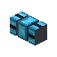
encodedlogistics:light_blue_dense_network_cable · Block · Stacks to 64 · Creative tab: Encoded Logistics: Cables
Light Blue Dense Network Cable: a Dense Network Cable (lanes.perDenseCable (default 32) lanes) that connects only to cables of its own colour and to neutral ones. Use a dye on a placed cable to recolour it, or a water bucket to wash it back to neutral.
Light Blue Dense Network Cable
Shift: Links network blocks together, with four times the lanes.
Works with
How to get it
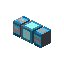
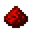
encodedlogistics:light_blue_dense_network_cable
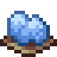
8encodedlogistics:light_blue_dense_network_cable_from_dye
Used to make
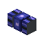
Blue Dense Network Cable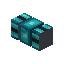
Cyan Dense Network Cable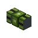
Green Dense Network Cable Light Blue Fiber Cable
Light Blue Fiber Cable- Lime Dense Network Cable
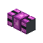
Magenta Dense Network Cable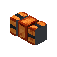
Orange Dense Network Cable Pink Dense Network Cable
Pink Dense Network Cable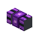
Purple Dense Network Cable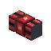
Red Dense Network Cable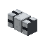
White Dense Network Cable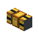
Yellow Dense Network Cable
As a block
| Hardness | 0.5 |
|---|---|
| Blast resistance | 1 |
| Tool | any |
| Light level | 0 in its default state |
Tags
#encodedlogistics:dense_network_cables
Where it's documented
- Cables (Networks)